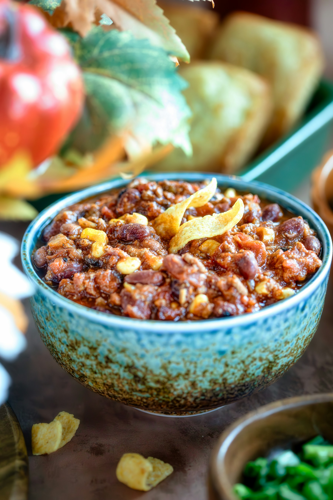

FROM MY KITCHEN, WITH CONCERN
Life’s too short
for normal chili.
Hearty bowls. Unexpected ingredients. Recipes that bring people together… to ask if you’re okay.
Find your next bad idea ↗
looks innocent.
give it a minute.
THE COMFORT FOOD PLOT TWISTgive it a minute.
ONE POT.ZERO RESTRAINT.SEVERAL CONCERNED FRIENDS.
FRESH FROM THE QUESTIONABLE KITCHEN
Not your grandma’s chili.
Unless your grandma is absolutely unhinged.
JLEST. LAST TUESDAY
HI, I’M JAMIE.
I believe every recipe
starts with “hear me out.”
Some people inherit treasured family recipes. I inherit concerned looks. This is my little corner of the internet for big bowls, questionable combinations, and the friends who keep inviting me to dinner despite everything.
Stay hungry. Stay suspicious.